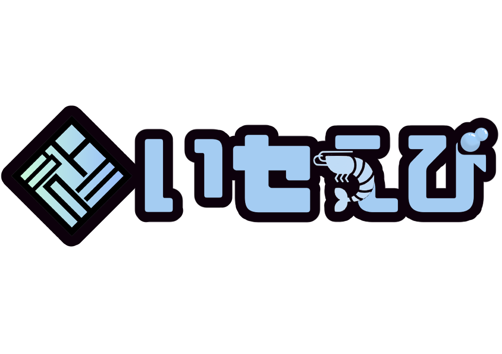

HOME
NEWS
TALENTS
GOODS
CONTACT
紅狼ガル - Profile
名前: 紅狼ガル
詳細な自己紹介:
名前: 紅狼 ガル (くろう がる)
誕生日: 6月12日
活動開始日: Twitch 2月4日 / YouTube 4月30日
ハッシュタグ: FA #クガート
配信タグ: #がるるんの小屋
趣味: 歌, ゲーム
好きなもの: ミルクティー, タバコ
特技: なんでも楽しめること
ファンネーム: 人狼の民
Twitch
X (旧Twitter)
YouTube
← タレント一覧に戻る